Open Source Software
An Introduction to the FOSS Philosophy
Disclaimer: The content on this platform is intended solely to promote and raise awareness of free and open-source software (FOSS) alternatives. NeighborhoodNerd21 and OpenIT are entirely independent and are not associated with, sponsored by, or endorsed by any of the featured projects or organizations.
Community
"Constraint is not hardship. It is a design instrument."
Ritchie & Thompson, The Unix Philosophy
Over the years, dedicated community members have come together to define exactly what Open Source means. The concept is as old as computing itself. In the beginning, it was simply how things were done. The shared mindset that drove early digital pioneers eventually evolved into a formal resistance against proprietary constraints. The strength born from passionate individuals coming together for a common purpose is the glue that holds open source projects together. By applying the same sense of community to the IT field we will empower organizations with the knowledge and support required for them to grow and be effective.
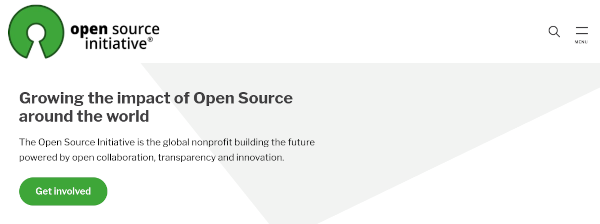
Open Source Initiative
Global non-profit formed to educate and advocate for the benefits of open source.
Homepage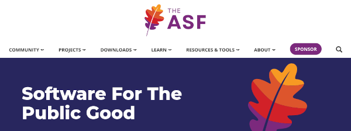
Apache Software Foundation
The Apache Software Foundation exists to provide software for the public good.
Homepage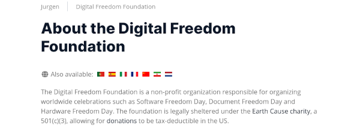
Digital Freedom Foundation
A non-profit organization that organizes worldwide celebrations of open source.
Homepage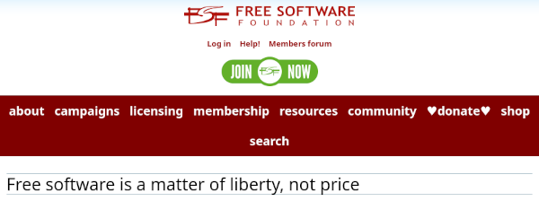
Free Software Foundation
A nonprofit with a worldwide mission to promote computer user freedom.
Homepage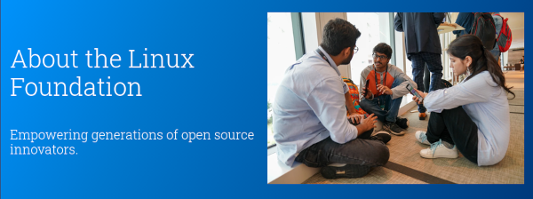
The Linux Foundation
A neutral, trusted hub for developers to code, manage, and scale open technology projects.
HomepageOpportunity
What began as an alternative approach to software licensing has grown into a broader philosophy. Today, it powers everything from open hardware design to free educational resources, providing a vast, globally accessible ecosystem for both professional and personal use. This provides the opportunity to use capable and stable open source alternatives to costly applications and subscriptions.
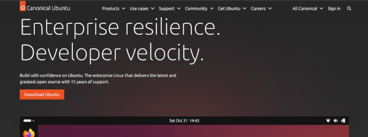
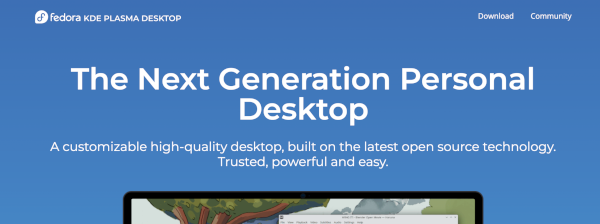
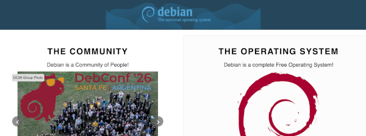
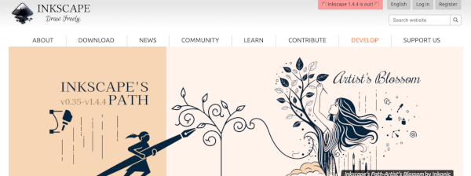
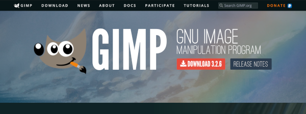
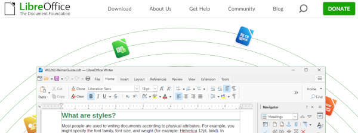
Integrity
Open source supports code integrity through radical transparency, decentralized peer review, and cryptographic verification. Rather than relying on hidden source code or a single vendor's promise, open-source ecosystems allow anyone to inspect, audit, and verify that software behaves as intended without unauthorized tampering. Anyone can inspect open-source code to verify its logic, spot bugs, and detect hidden backdoors. This idea of accountability through openness and transparency is familiar to non-profit organizations in all fields. Many open source projects also give everyone the ability to prioritize the integrity of systems and communication.
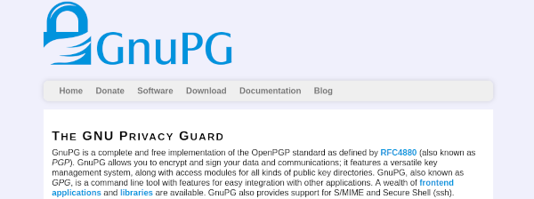
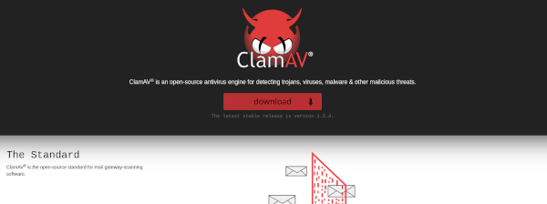
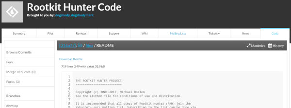
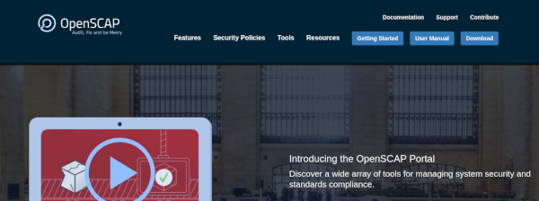
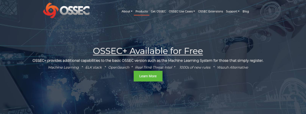
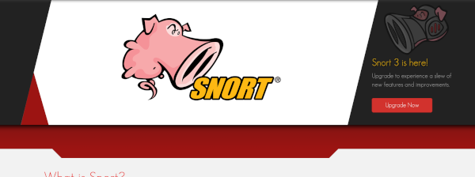
Further Reading:
- "The UNIX Philosophy"
- "The Open Source Definition"
- "Open Standards Compliance"
- "What is Free Software?" (The Free Software Definition)
- "Free software is a matter of liberty, not price" (Free Software Foundation)
- "Philosophy of the GNU Project"
- "Debian Constitution"
- The Linux Foundation
- The Linux Kernel Archives (The Linux Kernel Organization)
Linux® is a registered trademark of Linus Torvalds
Ubuntu® is a registered trademark of Canonical Ltd.
Fedora®, the Fedora word design, and the Infinity design logo are trademarks of Red Hat, Inc.
Debian® is a registered trademark owned by Software in the Public Interest, Inc.
ClamAV® is a registered trademark of Cisco.
Snort®, the Snort and Pig logo are registered trademarks of Cisco.
OSI and Open Source Initiative® are trademarks of Open Source Initiative